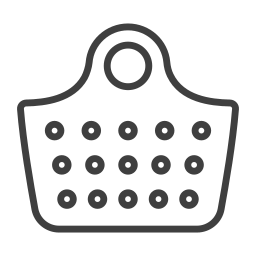

عضویت
ورود

سبد خرید
عضویت
ورود
سبد خرید

زمین و محصولاتش همه امانت خداست. از همین زمین امانت گرفتیم و هیچ ناخالصی ای اضافه نکردیم و توی کار خدا و امانت خدا هیچوقت دست نبردیم و نخواهیم برد.
محصولات کشمون از طریق یه زنجیره تامین شفاف به دست شما میرسه، این زنجیره، شامل چه اجزاییه؟
کشاورز و زنبورداری که قصهشو میدونیم و هنوز درست کار کردن و کار درست کردن براش مهمه، با استفاده از روشهای اصیل کشاورزی و زنبورداری، مراقب سلامتی ماست و سعی میکنه برای این تولید کمترین آسیب به طبیعت وارد بشه.

گروه کنترل کیفی متخصص، محصولات رو نمونهبرداری و بررسی میکنه و در صورت لزوم به آزمایشگاههای تایید شده توسط سازمان استاندارد میفرسته. برای هر بار موجود شدن محصول هم آزمایش تکرار میشه.


قیمت گذاری بر اساس کیفیت انجام میشه تا کشاورزها و زنبوردارا تشویق به بهبود کیفیت بشن. مشتری، هم متناسب با نتیجه کنترل کیفی محصول، پول پرداخت میکنه و هم میدونه چقدر از این پول به کشاورز یا زنبوردار میرسه.

برای بستهبندی سعی میکنیم تا حد ممکن از مواد قابل بازیافت و رنگ کمتر استفاده کنیم. شما هم با سپردن این جعبه به بازیافت یا استفادهی دوباره از اون میتونید در این تلاش همراه ما باشید.

محصولات با دقت بستهبندی میشن و با روشهایی ارسال میشن که هم سالم به دستتون برسن و هم طبیعت آسیب نبینه.
.jpg)
با خرید زعفران سرگل فقط بخش قرمز رنگ زعفران برای شما ارسال میشه، رشتههای زعفران وقتی که از گل زعفران بیرون
زعفران از دو بخش زرد و قرمز رنگ تشکیل شده، کشاورزها بعد از چیدن و خشک کردن،
.jpg)
زعفران پوشال زعفران پوشال مشابه زعفران سرگل میباشد با این تفاوت که مقداری دم زرد
.jpg)
زعفران تازه به دو روش سنتی و صنعتی خشک میشه. در روش صنعتی از دستگاه های خشک کن مخصوص زعفران استفاده
.jpg)
ا خرید زعفران رشته کامل، از تمامی قسمتهای زعفران میتونین استفاده کنین. خرید
تو این صفحه میتونین از بین عسلهای موجود، عسل مورد علاقهتون رو از زنبوردار بخرین.
.jpg)
در اصطلاح تخصصی به نوشیدنی هایی که طی فراوری های مختلف از گیاه «کاملیا
.jpg)
"خرید اینترنتی روغن زیتون درجه یک و باکیفیت". روغن زیتون های باغداران ما، از